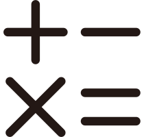

计算稿纸
小数位
自动（最多12位）
2 位
4 位
A−
22
A＋
数学键盘
撤销输入
重做
公式示例
复制稿纸
清空
点击公式插入空行；当前行已有内容时追加新行
ans
上一行 ·
_1
指定行 · 三角函数使用弧度
锁定稿纸
稿纸已锁定，可查看和复制；解锁后继续编辑。
＋ 添加一行
撤销删除
⠿ 数学键盘
输入到当前公式
恢复位置
置顶
收起
⌫ 退格
清空本行
撤销
重做
下一行 ↵
在光标处插入，选中文字后可用函数包裹。三角函数使用弧度；百分比为 ÷100，取余使用 %。
取消
确认